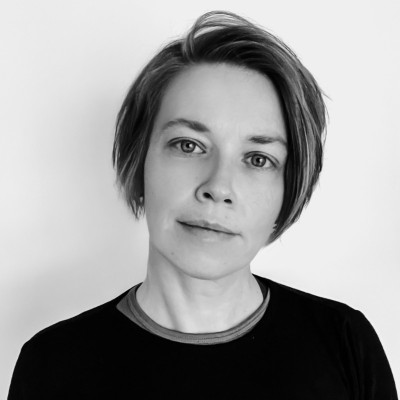

Hi, I'm Anks
I'm Software Developer that evolved from Quality Engineer with total 10+ years of experience in IT and its close surroundings. I mostly do Elixir and Ruby. Based in Poznań, Poland.
At some point, I might have had an account on every major website. The Internet is my life, also professionally – I majored in e-business (M.Sc: "Application of OpenId in e-administration" – yes, it was a thing in 2010, this is what ePUAP is about) and law (M.Sc. in software patents), I helped establish one of the first e-book stores in Poland, I used to click a lot on FB, and later started hunting for software bugs here and there. In 2020 I finally switched my job to a full time backend developer. I've also dabbled in photography, doing some wedding and amateur gigs along the way. Mentoring people gives me fuel for existence.
In my free time I enjoy reading, watching movies, cycling (3 bikes in da house), running (love & hate relationship) and a random parade of handcraft stuff among the years.